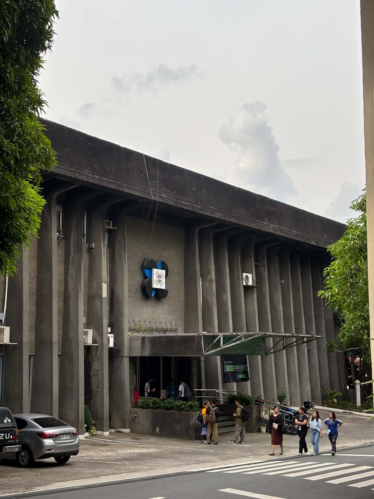

Looking back on my internship journey at DOST-PCIEERD, this section presents the challenges I encountered, the lessons I learned, the skills I strengthened, and my overall reflections throughout the internship.
My internship at the Department of Science and Technology – Philippine Council for Industry, Energy, and Emerging Technology Research and Development (DOST-PCIEERD) gave me the opportunity to experience how mathematics can be applied beyond the classroom. Assigned to the Finance and Administrative Division, I worked on financial data extraction, consolidation, validation, reconciliation, and document monitoring using the e-NGAS and TRACE systems. I also assisted in preparing formula-driven Excel worksheets for financial reporting and developed automated templates to improve data organization and monitoring.
Before starting the internship, I expected to encounter software applications rather than advanced mathematical computations. Since the BS Mathematics curriculum at UPLB emphasizes theoretical foundations, I initially thought I would struggle with the practical tools used in the workplace. To prepare, I enrolled in courses related to statistics, programming, economics, and numerical analysis. Although I expected to use programming software, I was instead introduced to Microsoft Excel. This is a tool I had previously overlooked despite its widespread use. My goal became mastering Excel, and throughout the internship I learned to use functions such as Data Validation, VLOOKUP, IF statements, and other formula-based techniques to automate financial summaries and improve reporting efficiency.
While the internship did not require advanced mathematical theories, it required the mathematical mindset that my degree had developed. Logical reasoning, systematic problem-solving, and attention to detail were essential in validating financial records, reconciling datasets, identifying inconsistencies, and ensuring the accuracy of reports. Courses such as Statistical Methods (STAT 101), Fundamentals of Mathematical Computing (AMAT 152), and my experience with MATLAB (MATH 174/175) strengthened my computational thinking and encouraged me to improve existing workflows through automation instead of relying solely on manual processes.
Beyond technical skills, this internship changed me personally. I entered the workplace as someone who was reserved and preferred figuring things out alone. As the weeks went by, I realized that growth also comes from asking questions, accepting guidance, and building relationships with the people around you. Looking back, I am most proud of how I adapted to unfamiliar tasks and transformed what I learned into practical skills that I continue to use beyond the internship. If I were to begin the internship again, I would make an effort to build rapport with colleagues much earlier, knowing now that a welcoming work environment makes learning even more meaningful.
This internship also reminded me that learning does not happen only through assigned tasks but through the people who patiently teach you. I am sincerely grateful to my supervisor, who guided me even before my internship officially began and continuously ensured that I was able to process the necessary requirements. I am equally thankful to my mentors, who took the time to explain concepts, answer my questions, and entrust me with responsibilities despite having deadlines and workloads of their own. Their patience to teach made me feel that I was not simply completing an academic requirement but genuinely learning from professionals who wanted me to succeed.
Overall, this internship strengthened my interest in careers involving data analysis, finance, and decision support. More importantly, it taught me that the value of a mathematics education is not limited to solving equations but lies in developing analytical thinking, precision, adaptability, and a willingness to continuously learn. As I return to my final year in college, I carry with me not only new technical skills but also greater confidence, professionalism, and appreciation for the people who help me. The most valuable lesson I learned is that asking for guidance is not a sign of weakness but a willingness to learn, and that continuous learning, together with the support of others, is what shapes both a better student and a future professional.